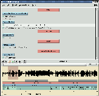

Choose a site closest to your location: Europe, USA.
New!
Transcriber-1.4.4 (see download page).

PresentationTranscriber is a tool for assisting the manual annotation of speech signals. It provides a user-friendly graphical user interface for segmenting long duration speech recordings, transcribing them, and labeling speech turns, topic changes and acoustic conditions. It is more specifically designed for the annotation of broadcast news recordings, for creating corpora used in the development of automatic broadcast news transcription systems, but its features might be found useful in other areas of speech research. Transcriber is developed with the scripting language Tcl/Tk and C extensions. It relies on the Snack sound extension, which allows support for most common audio formats, and on the tcLex lexer generator. It has been tested on various Unix systems (Linux, Sun Solaris, Silicon Graphics) and Windows NT. Transcriber is distributed as free software under GNU General Public License. |
Transcriber - Copyright (C) 1998-2002, DGA
http://www.etca.fr/CTA/gip/Projets/Transcriber/
{kind=link}